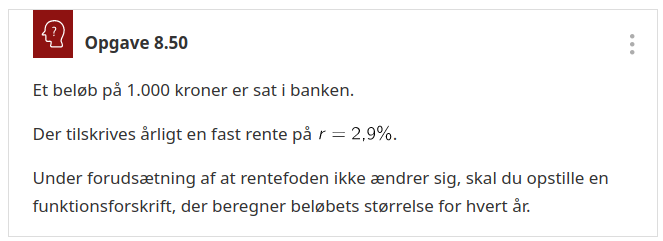

Naturlig
\begin{align*}
f(x) &= e^x \\
f^{-1}(x) &= \ln(x)\\
e^{\ln(x)} &= x \\
\ln \left( e^x \right) &= x \\
\ln ( a \cdot b) &= \ln(a) + \ln(b) \\
\ln \left( \frac{a}{b} \right) &= \ln(a) - \ln(b) \\
\ln \left( a^n \right) &= n \cdot \ln (a) \\
\ln \left( \sqrt[m]{a^b} \right) &= \ln \left( a^{\frac{b}{m}} \right) = \frac{b}{m} \cdot \ln(a) \\
\ln (x) &= \frac{\log(x)}{\log(e)}
\end{align*}
Differentiation
\begin{align*}
\frac{d}{dx} \left( e^x \right) &= e^{x} \\
\frac{d}{dx} \left( \ln(x) \right) &= \frac{1}{x}
\end{align*}
Integration
\begin{align*}
\int e^x \,dx &= e^x \;(+k)\\
\int \ln(x) \,dx &= x \cdot \ln(x) -x \; (+k)
\end{align*}
10 tal
\begin{align*}
f(x) &= 10^x \\
f^{-1}(x) &= \log(x)\\
10^{\log(x)} &= x \\
\log \left( 10^x \right) &= x \\
\log ( a \cdot b) &= \log(a) + \log(b) \\
\log \left( \frac{a}{b} \right) &= \log(a) - \log(b) \\
\log \left( a^n \right) &= n \cdot \log (a) \\
\log \left( \sqrt[m]{a^b} \right) &= \log \left( a^{\frac{b}{m}} \right) = \frac{b}{m} \cdot \log(a) \\
\log (x) &= \frac{\ln (x)}{\ln (10)}
\end{align*}
Differentiation
\begin{align*}
\frac{d}{dx} \left( 10^x \right) &= \ln(10) \cdot 10^{x} \\
\frac{d}{dx} \left( \log(x) \right) &= \frac{1}{\ln(10) \cdot x}
\end{align*}
Integration
\begin{align*}
\int 10^x \,dx &= \frac{1}{\ln(10)} \cdot 10^x \\
\int \log(x) \,dx &= \frac{x \cdot \ln(x) -x}{\ln(10)} \;(+k)
\end{align*}
Generelt
\begin{align*}
f(x) &= n^x \\
f^{-1}(x) &= \log_n(x)\\
n^{\log_n(x)} &= x \\
\log_n \left( n^x \right) &= x \\
\log_n ( a \cdot b) &= \log_n(a) + \log_n(b) \\
\log_n \left( \frac{a}{b} \right) &= \log_n(a) - \log_n(b) \\
\log_n \left( a^n \right) &= n \cdot \log_n (a) \\
\log_n \left( \sqrt[m]{a^b} \right) &= \log_n \left( a^{\frac{b}{m}} \right) = \frac{b}{m} \cdot \log_n(a) \\
\log_n (x) &= \frac{\log(x)}{\log(n)} = \frac{\ln (x)}{\ln(n)} = \frac{\log_k(x)}{\log_k(n)}
\end{align*}
Differentiation
\begin{align*}
\frac{d}{dx} \left( n^x \right) &= \ln(n) \cdot n^{x} \\
\frac{d}{dx} \left( \log_n(x) \right) &= \frac{1}{\ln(n) \cdot x}
\end{align*}
Integration
\begin{align*}
\int n^x \,dx &= \ln(n) \cdot n^x \;(+k) \\
\int \log_n(x) \,dx &= \frac{x \cdot \ln(x) -x}{\ln(n)} \;(+k)
\end{align*}
Opgaver
Nogle af opgaverne er simple, mens andre blandt andet kræver omskrivning til skjulte 2.gradsligninger.
Opgave 8.42
Beregn følgende værdier: \(\log_4(5)\) og \(\log_4(20)\).
Opgave 8.44
Løs denne ligning:
\[\ln(x-1) + \log(x-1) =1\]
Opgave 8.45 - udsnit
Løs disse ligninger:
- \(\log \left( x^2 + 5\cdot x - 50 \right) =2\)
Opgave 314 - Teknisk matematik, udsnit
Du skal bestemme x i følgende ligninger:
- \(2^x = 5\)
- \(2^{x+2} = 5\)
- \(10^{x-1} =12\)
- \(2^{-x} + 2^x =5\)
- \(9^x - 10 \cdot 3^x - 24 =0\)
Logaritmiske akser
\[f(x)=3x+0.7 \quad , \quad g(x)=0.7\cdot 3^x \quad , \quad h(x)=0.7\cdot x^3\]
- Hvad ser I?
- Beskriv så meget som muligt.
- Parsammenligning (Tal først i makkerpar. Bagefter sammenlignes makkerskabsgrupper)
Alt+Klik for at zoom ind. (Ctrl+Klik på linux)
- Med logaritmiske akser er det altså nemmere at se forskel på forskellige funktionstyper.
- Det vil gøre det nemmere at identificere en funktionstype, som passer til et diskret datasæt (datapunkter uden streger imellem).
Enkelt og dobbelt-log
- Inddeling i dekader.
- Hver gang man går et felt op/til højre ganges der med 10.
- Hver gang man går et felt ned/til venstre divideres der med 10.
- Den samme relative ændring giver samme afstand, altså
- er der samme afstand mellem 1 og 2, som mellem 8 og 16 osv.
Håndholdt matematik - opgave
I har følgende 3 datasæt
- a: (2, 10), (4, 13), (9, 25), (12.33)
- b: (1, 4), (5, 3), (8, 2.6), (11, 2)
- c: (2, 1.22), (4, 4.78), (8, 19.2), (12, 43)
- I skal plotte datasættene på hhv. alm. mm-papir, enkeltlogaritmisk papir og dobbeltlogaritmisk papir. Dette skal gøres på fysisk på i hånden.
- Afgør for hver af datasættene, om det repræsentere en lineær funktion, en potensfunktion eller en eksponentialfunktion.
Bestem forskrifter, som passer til hver af datasættene.
(I geogebra kan man anvende fitlinje, fitpot og fitvækst)
Forskrifter for eksp og pot
Eksponentialfunktion
\[f(x)=b \cdot a^x\]
- Man skal kende 2 punkter. (x1, y1) og (x2, y2)
\begin{align*}
a &= \left( \frac{y_2}{y_1} \right)^{\frac{1}{x_2-x_1}} \\
b &= \frac{y_1}{a^{x_1}} = \frac{y_2}{a^{x_2}}
\end{align*}
Potensfunktion
\[g(x) = b \cdot x^a\]
- Man skal kende 2 punkter. (x1, y1) og (x2, y2)
- Man kan bruge alle logaritmer i formlerne (log, ln, etc)
\begin{align*}
a &= \frac{\log(y_2)-\log(y_1)}{\log(x_2) - \log(x_1)} \\
b &= \frac{y_1}{x_1^a} = \frac{y_2}{x_2^a}
\end{align*}
Baggrunden for enkelt og dobbeltlog
- Hvorfor bliver en eksponentialfunktion til en ret linje i et enkeltlogaritmisk koordinatsystem?
- Hvorfor bliver en potensfunktion til en ret linje i et dobbeltlogaritmisk koordinatsystem?
- Instrukser!
- Når jeg siger buzzwordet … for anden gang, må I gå igang med opgaven. Ikke før!
- Opgave i makkerskabsgrupper.
- Først opdeling i makkerpar.
- Et spørgsmål til hvert makkerpar.
- Hvert makkerpar skal finde et et svar til sit spørgsmål.
- Alle hjælpemidler er tilladte (også jeres matematikbog https://matbhtx.systime.dk)
- Efterfølgende skal makkerparrene forklare svarene til spørgsmålene for det andet makkerpar i makkerskabsgruppen.
- Makkerparret med den største samlede hårlængde har spørgsmål 1 om det enkeltlogaritmiske koordinatsystem.
Fitfitternitfitfirumfit
Fit følgende datapunkter vha hhv fitvækst og fitexp i geogebra
| x |
4 |
7 |
11 |
15 |
18 |
21 |
| y |
1147.52 |
1272.28 |
1459.97 |
1675.35 |
1857.49 |
2059.43 |
Hvad ser I?
fitvækst -> \(1000\cdot 1.035^x\)fitexp -> \(1000\cdot e^{0.0344 \cdot x}\)
2 forskellige forskrifter
\[f(x)=b \cdot a^x\]
- b: Skæring med y-aksen
- a: Fremskrivningsfaktor
- 0 < a < 1 : Aftagende eksp funktion
- a > 1: Voksende eksp funktion
- \(a=1+r\), \(r\) er den procentvise stigning
\[g(x) = b \cdot e^{k \cdot x}\]
- b: Skæring med y-aksen
- k: Vækstraten
- \(k<0\): Aftagende eksp funktion
- \(k>0\): Voksende eksp funktion
Sammenhæng
\begin{align*}
a &= e^k \\
\ln(a) &= k
\end{align*}
Fordobling
- Hvert makkerpar opskriver en tilfældig voksende eksponentialfunktion af typen \(f(x)=b \cdot a^x\)
- Indtegn funktionen i et koordinatsystem (enten alm eller enkeltlog)
- Vælg en tilfældig x-værdi og beregn/aflæs den tilhørende y-værdi.
- Fordobl nu y-værdien, og beregn/aflæs den tilhørende x-værdi.
- Gør det en gang til
- og en gang til.
- Sammenlign jeres resultater i makkerskabsgrupper
- Hvilken sammenhæng mellem tallene kan I finde frem til i fællesskab?
Fordoblingskonstant
Der skulle gerne være samme afstand på x-aksen mellem hver fordobling, ligegyldigt hvor man starter henne.
Kan beregnes på følgende måder:
For \(f(x)=b\cdot a^x \quad , a>1\)
\[T_2 = \frac{\log(2)}{\log(a)} = \frac{\ln(2)}{\ln(a)}\]
For \(g(x)=b\cdot e^{k\cdot x}\quad , k>0\)
\[T_2 = \frac{\ln(2)}{k}\]
- Jeg viser den ene udledning. Den anden skal I selv klare i makkerskabsgrupper.
- Hvilken skal jeg vise for jer?
Halvering
For aftagende eksponentialfunktioner er der tale om en halveringskonstant, men ellers er princippet det samme.
For \(f(x)=b\cdot a^x \quad , 0< a <1\)
\[T_{1/2} = \frac{\log(1/2)}{\log(a)} = \frac{\ln(1/2)}{\ln(a)}\]
Eller
\[T_{1/2} = - \frac{\log(2)}{\log(a)} = - \frac{\ln(2)}{\ln(a)}\]
For \(g(x)=b\cdot e^{k\cdot x}\quad , k<0\)
\[T_{1/2} = \frac{\ln(1/2)}{k}\]
Eller
\[T_{1/2} = - \frac{\ln(2)}{k}\]
Det er dog de førstnævnte formler, som er nemmest at huske.
Bestemmelse af forskrifter
\(f(x)=b \cdot a^x\)
\begin{align*}
a &= \left(\frac{y_2}{y_1}\right)^{\frac{1}{x_2-x_1}}\\
b &= \frac{y_1}{a^{x_1}} = \frac{y_2}{a^{x_2}}
\end{align*}
- 1 kendt punkt + Fordoblings/halverings-konstant
\begin{align*}
a &= 2^{\frac{1}{T_2}} \text{ eller } a=\left( 1/2 \right)^{\frac{1}{T_{1/2}}}\\
b &= \frac{y_1}{a^{x_1}}
\end{align*}
\(g(x)=b \cdot e^{k\cdot x}\)
\begin{align*}
k &= \frac{\ln(y_2) - \ln(y_1)}{x_2-x_1}\\
b &= \frac{y_1}{e^{k\cdot x_1}} = \frac{y_2}{e^{k\cdot x_2}}
\end{align*}
- 1 kendt punkt + Fordoblings/halverings-konstant
\begin{align*}
k &= \frac{\ln(2)}{T_2} \text{ eller } k=\frac{\ln(1/2)}{T_{1/2}}\\
b &= \frac{y_1}{e^{k\cdot x_1}}
\end{align*}
Styr på finanserne

- Det er ikke bare at dele med 12! Det er lidt mere omstændigt.